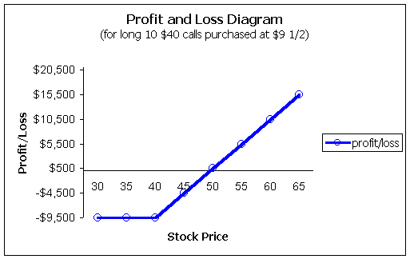
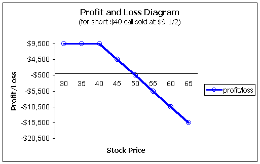

A long call option gives the buyer the right, but not the obligation, to purchase stock for a fixed price over a given amount of time. It is the call buyer that has the right to purchase stock; the short call seller has the obligation to sell stock if the long position exercises their option. There should be no concern for default by the short side as the Options Clearing Corporation (OCC) guarantees the performance of the contract.
The long call strategy is therefore bullish, as the value of the call rises with increases in the underlying stock. Please understand that when we say call prices rise as the stock rises, this is assuming that all other factors stay the same. It is quite possible for calls to fall in value as the stock rises due to time or volatility decreasing.
Investors are typically attracted to the long call strategy for two main reasons:
1) Leverage
2) Protection (hedge)
Long call options provide leverage, that is, they cost far less to control shares of stock as compared to an outright purchase; therefore, their performances will be magnified (up or down) relative to the stock. They also provide protection by limiting your downside risk.
You are bullish on MRVC trading for $39-1/2.
If you want to buy 1,000 shares, it will cost you $39,500. You could, instead, buy 10 January $40 calls which are trading for $9-1/2. This would cost you $9,500.
If the stock is trading at $60 by expiration, the long stock position would be worth $60,000 while the call would be worth $20.
Your return on the long stock is 52% (not annualized) while the return on the option is 110% (not annualized). This is what they mean by leverage. The investor who bought the call options, in this example, more than doubled the returns as compared to the long stock position.
What if the stock falls substantially? The long stock position has $39,500 at risk, which, theoretically, could end up at zero. The long call only has $9,500 at risk. This is what is meant when you hear that long call options provide protection -- they limit your downside risk. The long call position is controlling the same number of shares (1,000) for $30,000 less at risk ($9,500 vs. $39,500).
It should be noted that the long stock position, in this example, while beaten in return on investment (50% vs. 110%) would never lose in terms of total dollars. For example, the long stock position earned $60,000 - $39,500 = $20,500, while the long call earned $20,000 - $9,500 = $10,500. The long stock position earned nearly twice the amount of dollars, which is why its return is roughly half the return for the long call. So be careful in your understanding when you hear that options beat stock in terms of returns. Assuming two investors are controlling the same number of shares, the option will outperform stock in terms of return on investment and not total dollars.
What if our long call position puts the same dollars at risk as the long stock position? Long stock would have cost $39,500 so, for that money, the call option buyer could purchase 41 contracts (controlling 4,100 shares) at $9-1/2. Now, the call position will be worth 4100 * $20 = $82,000 at expiration. The return on investment is back to the 110% as in the example above. However, this option investor is controlling 4,100 shares and not 1,000. This is another way to view leverage; for the same dollar investment, one can control more shares through the options market.
So regardless of how you cut it, options do provide leverage!

We can see the effect of the protection by the profit and loss diagram above (if you are not sure how to read this chart, please see our section under "Profit and Loss Diagrams"). Again, the most the option investor can lose, in our original example, is the $9,500 paid for the 10 contracts. Yet, they participate in all of the upside returns above the $40 strike price.
This added downside protection does not come for free. We can also see that the break-even point is raised from $39-1/2 to $49 for the call buyer.
One very useful strategy that many investors use is that of diversification through call options. For example, say you have $50,000 to invest and would like 500 shares each of ten great companies. The good news is you will probably make money over the long term; the bad news is this may cost you $300,000. Well, with long calls you can invest in all of them for $50,000 or less. Now you have a lot of diversification without the need for a lot of money to achieve it.
Probably one of the most underutilized strategies in options is that of long deep-in-the-money calls as a substitute for long stock. Using our previous example, MRVC is trading at $39-1/2. We were looking at the $40 strike for $9-1/2. However, this is all time-premium as the stock is still below the strike price. So there is substantial risk if the stock does not move quickly enough (please see our section on deltas and gammas). This is why we saw the break-even point pushed to $49 in the profit and loss diagram.
Let's say we have two traders with $40,000 to invest. The first trader buys 1,000 shares MRVC at $40 for a total outlay of $40,000. The second trader buys a deep-in-the-money call such as the Jan $20 trading for $21-3/8 for a total price of $21,375, and leaves the remaining $18,625 in the money-market.
The second investor who buys this option will be participating nearly point-for-point to the upside just like the long stock position that paid $40,000. But let's say the stock falls substantially -- down to nearly $20. Now the long stock position is down $20 points, while the long call position is down less than this. Why? Because now the option is more at-the-money and the time premium is increasing; it provides a crutch for the option holder. So long deep-in-the-money option holders enjoy the benefit of point-for-point upside movement and less than point-for-point downside. In the worst-case scenario, the first investor is bankrupt while the second investor still has $18,625 sitting safely in the money-market.
Think about how powerful this strategy can be especially for those volatile tech stocks you may be trading. You participate in all of the gains to the upside but not to the downside. It's a tough strategy to beat.
The strategy behind the naked (or uncovered) short call is neutral to bearish. The investor is betting that the stock will either fall or sit still.
| Important note! This is very different from the short call against long stock position (covered call strategy), which is neutral to bullish. All too often investors make the big mistake of hearing "short call" and immediately associate the covered call as a bearish position. Things change when you start pairing options with other positions! So please keep in mind that we are talking about naked, or uncovered, calls in this section. |
When selling naked (uncovered) calls, the investor takes in the premium, and in exchange is willing to assume the upside risk of the stock. Let's take a look at the profit and loss diagram assuming the MRVC investor above shorts 10 Jan $40 calls at $9-1/2:
We see the maximum this investor can make is the $ 9-1/2 points, or $9,500 for 10 contracts. The investor is also exposed to unlimited upside exposure if the stock continues to climb above $49 1/2. Why? The investor starts to lose profits for any stock price above $40 -- the strike -- at expiration. However, because of the $9-1/2 points we received as an initial credit, the investor can afford to have the stock rise to $40 + $9-1/2 = $49-1/2 before losses will be incurred. It should be evident that this is among the most dangerous of all option positions!
Long call options are among the most basic of strategies, yet are very powerful due to the leverage. They are relatively easy to understand, so they're usually the first option trade for most investors. However, be sure to see our sections on "Deltas and Gammas" and "Implied Volatility" before entering into a long or short call position.